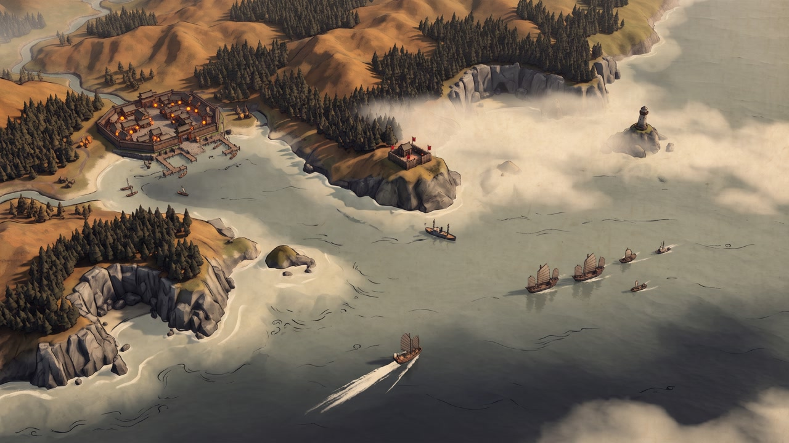
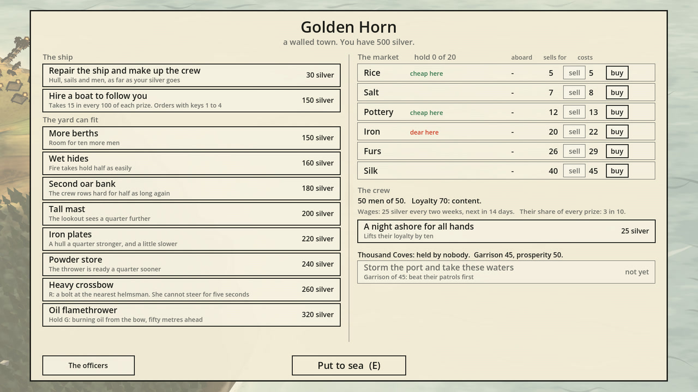
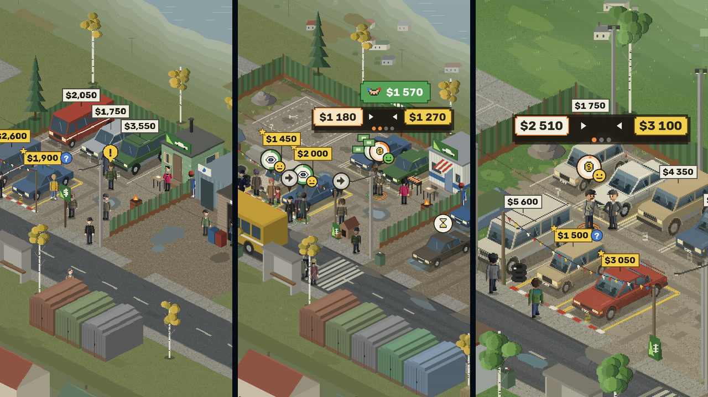

On Friday at 18:30 Vladivostok time the Far East hackathon began. The Far Eastern Federal University runs it as the last act of its school of game development, anyone may enter, and it lives on MyIndie. Thirty-one teams signed up. The rules are short: 72 hours, and the game must be about the history and culture of the Russian Far East. Some teams sit in a hall on the campus on Russky Island. We take part from a desk in Sydney.
Half of this studio is from Vladivostok, so the theme is home. We could not choose between two ideas, so we are building both, in the same 72 hours. That is only possible because of how we work: one person and one AI. This devlog is about that, hour by hour, and there will be one for day two and one for day three.

The two games
Pirates of the Japan Sea (in Russian: «Железная джонка», The Iron Junk). The year is 1220. The coast where Vladivostok now stands belongs to Eastern Xia, a Jurchen state, and the Mongols will reach it in 1233. You have one junk with oars, a crew of archers and a thrower of fire bombs. You sail by hand, fight in two or three minutes, hire boats, storm ports and try to hold your islands for thirteen years. For a computer, in a browser.
Right-Hand Drive: Green Corner (in Russian: «Правый руль: Зелёный угол»). The Green Corner is the car market on a hill in Vladivostok where, from the early nineties, half of Russia bought used right-hand-drive cars off the ships from Japan. You start in April 1992 on a dirt lot your uncle leaves you, with a handful of cars that sailors brought in. You prepare cars on weekdays, sell on Saturday and Sunday, and move lot by lot toward the market gate until December 2008. A pixel tycoon for a phone held upright.
Who does what
The machine is Claude Code. It sits in the project folder, writes every line of the game, draws the pixel art and the shaders with code, runs the game without a window to test it, and puts each build where it can be played. It works in several copies at once: on Saturday morning three of them were redrawing ships, land and towns of the pirate game at the same time, each in its own copy of the project, while three more were inside the car game.
The human does not write code in this hackathon. What he does:
- Chooses what the game is. Before the car game there were six pitches. Five were jobs done by hand: inspector, parking boy, unloading a ship, night guard, driving a convoy. The answer was "I wouldn’t play any of these". One idea survived, the uncle’s lot.
- Chooses the picture. The machine cannot tell what is beautiful. It can show options, and he points.
- Plays every build and says what is wrong, in plain words. This is most of the job.
- Rules. One-line answers that settle an argument: "Rubles." or "No walking ashore".
- Brings other people. A friend from Vladivostok played the car game on Saturday morning. A designer looked at it over breakfast.
Game one: the picture came first
The pirate game began on Friday, a few hours before the start, as a document and five paintings made by an image model: what the sea, a battle, a fort and a boarding should look like. The human picked one, ink and wash over lit hills, and wrote "I want to play it already". By the start of the hackathon the game had maps, a design and that target. It had no code. Everything you can play was written after the bell.


Two and a half hours after the bell there was a ship to sail. Then the loop started that has run ever since: he plays for ten minutes, writes a few lines, the machine answers with a new build in ten to forty minutes.
Pretty slow. More action, faster. Didn’t find any enemies.
So ships got sixty per cent faster, and two or three patrols now always cross your path. The next verdict was the opposite problem: the enemies were "like super enemies". The machine had written opponents that aimed perfectly and never made a mistake. They were made slower than you, given half your skill with a bow, and taught to give up.
The best change of the day also came from one sentence. The first map worked like most games: sail to the edge, press a key, see a chart, pick a place. He wrote: "I don’t want to fast travel to other coasts, it’s all sailing, so he can zoom in anytime and be where he is on the strategic map." By one in the morning the whole sea, 512 by 288 kilometres, was one piece of water. You roll the wheel back, pass through cloud, and you are looking at the map. Roll it forward anywhere and you are on the water there.

Game two: seven builds before lunch
Green Corner did not start from nothing either, and it is fair to say so: it stands on the interface kit of our other tycoon, VR Arcade Story. The rules, the cars, the lot and the people are new. The first version you could play was saved five hours after the bell. The human played build 2 at about one in the morning and answered:
OK. Needs a lot of work. The menus are small. Way too much text, move it to tooltips. Need more icons. Selling goes by fast, and it’s unclear if a guy is a buyer.
Then he went to sleep, and the machine did not. By the time he woke up there was a calendar from 1992 to 2008, seven lots, sixty-six car models, sailors, auction sheets, customs and a typhoon. Selling had become a scene you can watch: a buyer walks the row, opens a door, kicks a tyre, haggles, shakes hands, counts the notes.

On Saturday morning two outside opinions arrived. The friend from Vladivostok liked it and asked for prices in roubles, more variety in the cars, things only locals would recognise, and cars that do not drive through each other. The designer was harder on it: fonts, headings, far too much text. "You can see it’s Claude."
He is right, and it is the most useful sentence of the day. An AI left alone writes a paragraph where a person would draw an icon. So the machine drew six different interface styles on one page, and the human chose the fourth, the one made of pixels like the world under it. Roubles were settled in one word. Both are being built as this is written.

Two games at once
In practice it looks like this. Two windows, one per game, each with its own machine that keeps its own notes on what was decided. The human plays game one while game two is being rebuilt, then swaps. Each machine hands the big jobs to helpers and checks their work before it reaches the build. Neither game waits for the other, and the only thing in short supply is the human’s attention. That is the real limit of this way of working, and it is why the verdicts are so short.
Where the machine fails
- It cannot hear. The pirate game’s sound is made from numbers at start-up, and the machine tested it for volume and for clicks in the loops. Whether it sounds good, nobody knows until the human puts headphones on.
- It cannot tell fun from correct. Every check passed on the build with the unbeatable enemies. Later it set the enemies’ courage so low that every one of them ran from a healthy ship, and the checks passed again.
- It broke the game once. At eleven at night a commit went in with a broken line and the game would not start. It was fixed in three minutes. Since then nothing is saved until the game has been started and has printed no errors.
- It writes too much text. See above.
- It runs out. On Saturday the helpers hit their usage limit in the middle of an edit and left ninety-four failing checks behind. The work was picked up on a different model.
- Its history is from memory. Dates, names and prices in both games still need a pass against real sources, and for Green Corner, against people who were there.
What catches most of this is not cleverness but checks. The pirate game has twelve of them, 176 separate tests: sailing, fights, sight, prizes, hired boats, the chart, trade, holding a region, weapons, saving, sound, and the thirteen years of history. The car game has a bot that plays from 1992 to 2008 in sixteen seconds. It was that bot, not a person, that found the late game broken: it ended $125,000 in debt on the third lot.
Day one in numbers
- Seventeen and a half hours since the bell, of which the human slept roughly six.
- Pirates of the Japan Sea: 36 saved versions, about 9,800 lines of game code, 19 shaders, 12 checks, a whole sea.
- Green Corner: build 7, 78 car models from 9 makers, 7 lots, 17 years of calendar, music and 27 new sound effects.
- Lines of code written by the human: none. Decisions made by the machine about what the games should be: as few as we can manage.
What is next
Two more days. For the pirates: boarding fought by squads, more coasts built by hand, music. For Green Corner: the new interface, roubles, a Vladivostok that locals recognise. Neither game is public yet; both go up on MyIndie for the judges by Monday evening, and after the hackathon we want both released properly, on as many platforms as will take them.
Update, 23 November: you can play both now. They run in the browser, free, on itch.io: Pirates of the Japan Sea (a computer with a keyboard and mouse) and JDM Car Lot Tycoon (a phone or a computer). The car game is also on Google Play in early access. These are jam builds and they change several times a day.
We build in the open and change things from what people tell us. If you were at the Green Corner in the nineties, or know the history of this coast better than a machine does, write to us: contact@goldenharbourgames.com. Day two tomorrow.